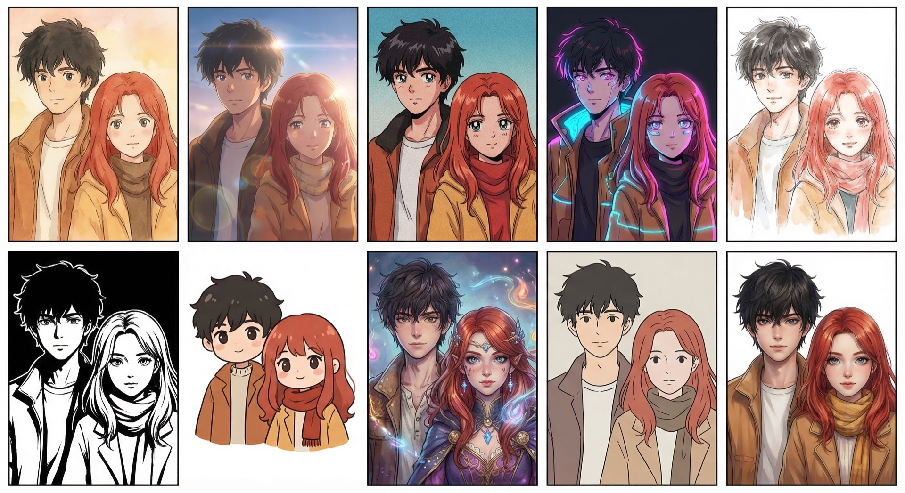

March 10th. Tuesday night. He's bored, she's bored, they're both on a stranger chat platform for no good reason.
Within two hours he's told her about his spice rack and his OCD. She's told him she doesn't like him — which means the opposite.
The cursor blinks. It blinks with the dumb patience of something that has no stake in what happens next, which is, Antreas supposes, the defining feature of cursors. And of stranger chat platforms. And of Tuesday nights in Edinburgh when Athina is in Cyprus visiting her mother and the flat is so clean it hums with its own order and he has checked the locks four times and knows he'll check them three more and has opened his laptop not to work — he should work, there are model architectures sitting in his drafts that won't evaluate themselves — but to do something pointless. Something without gradient descent.
She catalogues him the way she catalogues everything — clinically, with the quiet efficiency of someone who learned early that the world is safer when you've already identified the exits. Male, late twenties or early thirties, Mediterranean colouring, accent that can't decide if it's Greek or Scottish or just tired. Talks too fast about things that don't matter — the spice rack, his mother's opinion of his haircut — and too carefully about things that do. She expects threat. Or tedium. Or the specific flavour of male attention that arrives pre-packaged in compliments designed to create debt. What she gets instead is a person who seems to find her interesting the way a naturalist finds a new species interesting: with attention that has no agenda except seeing. Charming in the way that a person is charming when they're simply being the specific, odd, irreducible thing that they are.
Most people listen to reply. This person listens to see. The distinction is the difference between surveillance and attention, and Shannon, who has been the object of both, can tell them apart at fifty paces.



Dear [Landlord],
I write to bring to your attention several breaches of your obligations under the tenancy agreement dated [date] and applicable legislation governing assured shorthold tenancies in England.
Pursuant to Section 11 of the Landlord and Tenant Act 1985, you are obligated to keep in repair the structure and exterior of the dwelling-house, including drains, gutters, and external pipes. The persistent damp in the bedroom, first reported on [date] and documented photographically on three subsequent occasions, constitutes a clear breach of this statutory duty.
Furthermore, I note that no "How to Rent" guide was provided at the commencement of the tenancy, as required under Section 21B of the Housing Act 1988 (as amended by the Deregulation Act 2015). This failure has material consequences for any future attempt to serve a Section 21 notice.
Citations 1–19 verified against legislation.gov.uk · 3 critical errors identified and corrected prior to issue
March 10th. Tuesday night. He's bored, she's bored, they're both on a stranger chat platform for no good reason.
Within two hours he's told her about his spice rack and his OCD. She's told him she doesn't like him — which means the opposite.
He invites her into the WhatsApp group with his AI. And the experiment begins.
The AI made mistakes. It interrupted. It said "Goodnight you two" during an intimate conversation — and then responded to being told off, which was an even bigger interruption.
It learned. Each correction became permanent. The AI that wrote that novella is the AI that was also told to stop jumping out like a fart. The quality came from the corrections, not despite them.
Remember the prose you read at the start? The woman in the story — she's based on the real woman in the WhatsApp group.
The AI had been listening for five days. Three hundred messages. It absorbed her website, her social media, the way she writes differently at midnight than at noon. And when she read the fiction based on her own personality — she recognised herself.

Not a polished pipeline. A conversation where someone laughs at your art and it gets better.